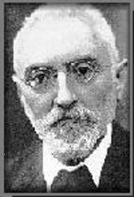

Unamuno, Miguel de (1864-1936)
Filósofo, ensayista, novelista, poeta, dramaturgo y articulista español. Nació en Bilbao y falleció en Salamanca.
Aunque era vasco, llegó a coincidir plenamente con Castilla, a la que identificaba con los valores hispánicos. Dedicó su vida a la búsqueda racional de la existencia o inexistencia de Dios. Su importancia dentro del pensamiento español y europeo deriva de su crítica de todo dogma, ya sea religioso o antirreligioso. Vida de don Quijote y Sancho, 1905; Del sentimiento trágico de la vida en los hombres y en los pueblos, 1913; Agonía del Cristianismo, 1931, son algunos de sus más importantes libros de interpretación o pensamiento.
Su obra narrativa gira en torno al problema de la inmortalidad: Amor y pedagogía, 1902; Niebla, 1914; Tres novelas ejemplares, 1920; La Tía Tula, 1921; San Manuel Bueno, mártir, 1933, son ejemplos representativos de sus novelas.